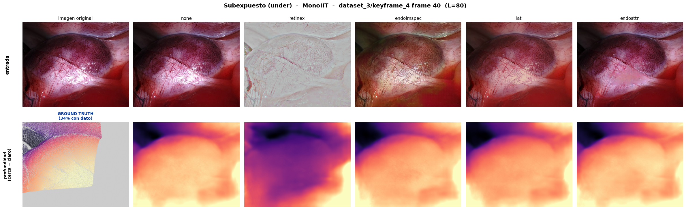
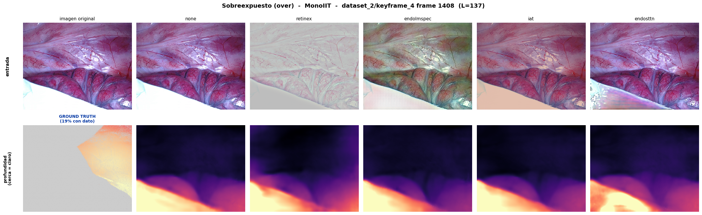

Análisis cualitativo sobre MonoIIT (el modelo de menor error del estudio): cómo afecta cada corrección de iluminación a la estimación de profundidad en los fotogramas más oscuros (under) y más brillantes (over) del split oficial, comparado contra el ground truth.
Las métricas globales (AbsRel, RMSE) promedian el error sobre los 550 fotogramas y ocultan dónde ayuda o estorba cada enhancement. En endoscopía los dos regímenes de iluminación más problemáticos son:
Los métodos retinex, endolmspec e iat buscan precisamente corregir estos extremos. Este avance los inspecciona de forma cualitativa.

GROUND TRUTH · none · retinex · endolmspec · iat — fila superior: imagen; fila inferior: profundidad (disparidad)
En las zonas oscuras la imagen none aporta poca textura, por lo que el mapa de profundidad tiende a aplanarse. Retinex e IAT levantan la luminancia y pueden recuperar estructura; conviene observar si la disparidad predicha se acerca al ground truth sin introducir ruido en las sombras.

GROUND TRUTH · none · retinex · endolmspec · iat — fila superior: imagen; fila inferior: profundidad (disparidad)
En las regiones quemadas la información está saturada. Aquí interesa ver si el enhancement atenúa el brillo y devuelve geometría plausible (coherente con el GT) en las zonas especulares, o si amplifica artefactos. Retinex suele cambiar fuertemente el balance de color (efecto "lavado"), lo que puede o no beneficiar a la red.
Estas vistas cualitativas complementan la tabla del estudio: un enhancement puede mejorar el AbsRel global pero deteriorar un régimen específico (o viceversa). El análisis por exposición, contra el ground truth, ayuda a explicar por qué IAT tiende a ayudar (corrección suave que preserva la estructura) mientras que Retinex puede degradar (transformación agresiva del color/contraste).